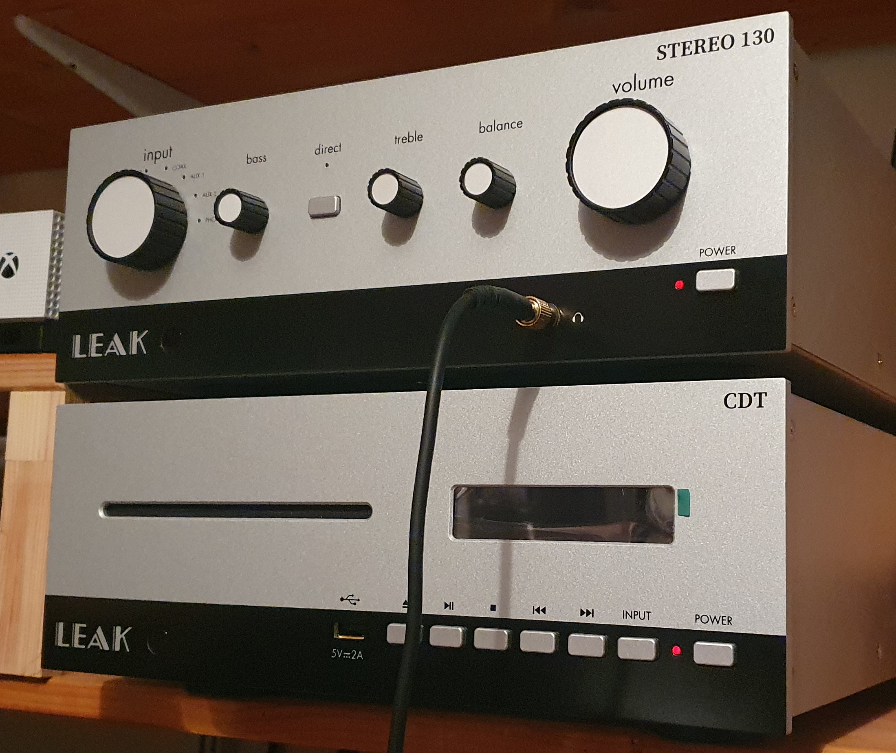
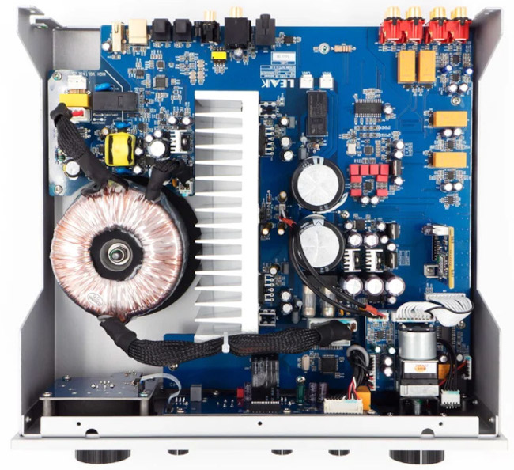

A review of the Leak Stereo 130 and CDT
 Like a lot of people these days, I'm spending most of my
working day in my home office. So I thought I'd treat myself
to an upgrade to the old Denon compact music system in
the office. The
Denon wasn't bad by any means, but it had no DAC, no support
for phono (turntable), and no subwoofer output. So it was
surrounded by a bunch of other electronic doohickies, each with
its own power supply.
Like a lot of people these days, I'm spending most of my
working day in my home office. So I thought I'd treat myself
to an upgrade to the old Denon compact music system in
the office. The
Denon wasn't bad by any means, but it had no DAC, no support
for phono (turntable), and no subwoofer output. So it was
surrounded by a bunch of other electronic doohickies, each with
its own power supply.
Given the environment, I don't need a lot of output power, but compactness and lack of clutter is crucial. I'm fussy about sound quality, but I'm not precious or pompous about it. Consequently, I won't have a lot to say about sound quality in what follows -- I'm more interested in the practical aspects. I don't really have the vocabulary to describe sound quality, and I think it's too subjective even to try.
Although I use Spotify and Qobuz, my main source of music is my huge stack of audio CDs, some of which I've had since the 1980s. I've ripped these all to disk, and I can play them on a computer, but I prefer to play the real CDs. Consequently, I wanted a compact audio system with a built-in CD, or a matching amplifier/CD pair. In the end I went for the pair, simply because it was cheaper.

Overview and competition
Leak's Stereo 130 is an integrated audio amplifier with about 45W RMS output power, and a comprehensive set of analogue and digital inputs and outputs. CDT is a CD transport, that is, a CD player with no analog processing parts; it's designed to be used with a separate digital-to-analog converter (DAC), or one built into an amplifier.
The amplifier and CD transport can be used independently, but it's pretty clear that they were designed to be paired. They are of the same size and shape, with similar styling, and are operated by the same remote control.
The amplifier/CD transport pair can be had for about £1100 without the wooden trim (of which, more below). To my mind that's a lot of money, and I expect a great deal. For the most part I haven't been disappointed; but nothing's perfect, as I will explain in due course.
The Stereo 130 is one of the few amplifiers on the market to have both asynchronous USB and phono (vinyl) inputs. It's similar -- in this respect and others -- to Quad's Vena II. The Stereo 130/CDT combination offers similar features to Quad's Artera Solus, at a similar price, although the Solus does not have a phono input. Audiolab's Omnia does have a phono input, and also supports network streaming, but it's considerably more expensive.
Leak's offering is not a compact or single-box audio solution. Although it is versatile, with support for many types of audio source, it doesn't have any network streaming features, and there's no indication that Leak will be releasing a model that does. Quad's Vena II Play has network streaming, and is only about £100 more expensive than the basic Vena II.
Despite the English heritage, Leak audio devices are made in China by the IAG company, which originated in Hong Kong. Although the company retains some UK connections, "Leak" is now simply a brand name. That's not a criticism -- the products must stand or fall on their own merits. But if you're looking for an authentic piece of English audio heritage, bear in mind that Leak's original products are still available, and are relatively easy to refurbish and maintain.
IAG also owns the Quad, Audiolab, and Mission brand names; it's likely that products from these brands share components and design elements.
Size, shape, and aesthetics
Both the amplifier and the CD transport are available with metal or wooden casing. Leak says that the wood is walnut veneer, although the veneering is not visible, and the wooden units look very elegant. The wooden casing adds about £100 to each item, and removes about twenty years from the aesthetic. I can see why many people would prefer this look, but I'm not inclined to pay extra for purely cosmetic features. The art deco-style panel logo is the same with both case styles, and is anachronistic in both -- it was not used (as I recall) on original Leak products.
Both units are about 330mm wide by 150mm tall by 280mm deep with the wooden case, or 300mm by 120mm by 280mm without. They will stand on a 12-inch shelf, but only with the front of the cabinets sticking out a little. Fortunately, the rubber feet are large enough that the fronts can stick out safely. While this would not affect everybody, it would have been a deal-breaker for me if the units had not fit into the shelf space I have available.
In fact, one of the main reasons I bought the Leak over the similar Quad Vena II is that the latter is 20-30mm deeper. Although the Quad is smaller in the other dimensions, it wouldn't have fit on my self. Given that the Leak and the Quad amplifiers are functionally almost identical, seemingly minor things like this can amount to deciding factors.
Both the amplifier and CD transport have a substantial metal front panel, about 5mm thick. This is more apparent in the units without wooden cases, which look more industrial in general, even to the extent of having prominent, visible fastenings.
Incidentally, the Leak wooden case isn't just trim -- it's the actual case. Pro-Ject Audio makes wooden bling for its devices -- the wooden panels just attach to the metal case using magnets. Leak has not been this cynical.
Controls - amplifier
The Stereo 130 has retro-style controls -- big fat knobs you can twiddle. The volume control is motorized, so its actual position changes when using the remote control. This isn't a gimmick -- the volume control is an analog tracked potentiometer, not some kind of digitally-controlled attenuator. So it has to be operated by a motor. In my unit the potentiometer appears to be an Alps part -- these are expensive devices with a reputation for long life. This matters, because a poor-quality potentiometer can eventually become scratchy and erratic.
There are small knobs for bass, treble, and balance, all of which are defeated by the "direct" button. With all three knobs in the centre position, enabling "direct" mode has no audible effect that I can discern -- I suspect that "direct" mode just exists to throw a bone to the audio snobs who think that any kind of signal processing is a no-no. Having said that, I should point out that it isn't a fake -- the "direct" mode actually switches out part of the processing logic, as evidenced by the solid thunk of relays when you press the button.
Personally, I use the bass, treble, and balance knobs all the time, and I'm glad they're available. Balance is particularly important because I hear better in one ear than the other. The bass and treble controls have a fairly subtle effect, compared to other amplifiers I've used that have similar controls. Leak says the control range is +/- 6dB.
Controls - CD transport
There's not really a lot to say here. There's the usual play/forward/reverse, etc., plus an input selector to switch between CD and USB stick. The front panel display is bright enough to light a room in the dark and, although it can be switched off completely (using the remote), it can't be dimmed (so far as I can see). When playing a CD, the display shows the track and the track time; so far as I know, it can't be switched to showing the number of tracks or the total time.
Remote control
Both the Stereo 130 and the CDT are supplied with remote controls -- and they are identical. The same remote operates both devices. It's wasteful, in a way, to have two identical remote controls but, I guess, handy to have a spare.
The remote control is the usual black plastic lump. You have to select specifically which device to control, using the "A" and "CD" buttons on the remote. This leads to some oddities. For example, the up/down volume buttons have no effect on the CD player when it is playing, so it would have been nice if they could have controlled the, um..., volume when in CD mode. How difficult would that have been?
DAC
The Stereo 130 has four digital inputs -- five if you count the Bluetooth -- two S/PDIF optical inputs, one coaxial S/PDIF, and one asynchronous USB.
The DAC is based on the ESS ES9018 device, which is a respectable chip. Part of its appeal lies in the low-jitter oscillator but mostly, I think, in the upsampling frequency of up to 384 kHz. Of course, you can't make data that isn't there, and this frequency is a long, long way beyond what the human ear can hear. However, upsampling to this extent makes it much easier to design the analog low-pass filter that is an essential part of digital-to-analog conversion.
Of course, there's more to the design of a DAC than a single chip -- the analog filtering is very important, as is the stability of the power supply. I can't really comment on either of these in the Leak amplifier.
The DAC is claimed to be able to support absurdly high sampling rates. I can't comment on this, but it certainly works fine with 24-bit/192 kHz material -- at least, with USB input. It's not entirely clear whether the optical/coax inputs support 24-bit samples. Why should this be in doubt? Well, the S/PDIF interface -- whether optical or electrical -- is really designed for 20-bit samples. Each data frame has a 20-bit audio packet and then four bits of "auxiliary" audio. It's generally accepted that not all equipment vendors will use the auxiliary audio bits; some do not even use all of the main 20 bits. After all, CDs aren't recorded with more than 16-bit precision.
Many retailers say that the Leak 130 supports 24-bit/192 kHz S/PDIF streams, but I haven't seen anything from the company itself that confirms this. It probably does but, frankly, the difference between 20-bit and 24-bit audio is unlikely to be very obvious.
I listened to the 130's DAC with various digital sources using headphones and the same headphone amplifier, alongside my Pro-Ject S2 DAC. Frankly, I couldn't tell them apart. Both sound quite bright (lacking a better word) to my ears compared to, for example, my Astell and Kern portable player. That's not a criticism, just an observation. Unlike the Pro-Ject, the Leak does not expose fine-tuning controls for the DAC. However, I've never found these controls to be particularly useful. It's not that they don't change the sound; rather, they don't change it in ways that sound 'better' or 'worse' to my ears. It doesn't bother me that I have fewer pointless controls to fiddle with.
Using a subwoofer
I'm using the 130's pre-amplifier output to drive a Yamaha subwoofer, which works fine. The subwoofer has its own gain and cross-over control, so it's possible to match it to the main speakers.
I use a subwoofer because, in an office environment, I only have room for small-ish, wall-mount speakers. The subwoofer lives under my desk. It's easy to turn off the subwoofer when other people are around.
It takes a bit of fiddling to get the subwoofer matched to the main speakers, but it's worth it. I'm generally a fan of the small speaker/subwoofer combination, compared to large, heavy main speakers. The great thing is that you can put the subwoofer anywhere, within reason -- low frequencies are not directional. Under the desk, I can rest my feet on it.
I've seen no evidence that the Stereo 130 can't drive large, floor-standing speakers successfully; I just don't have any to test it with.
CD player capabilities
The CD transport has both electrical (coax) and optical S/PDIF outputs. Either can be used to connect to the amplifier. I've only used the optical connection, although there isn't any reason to expect the electrical output to sound any different.
I'm pleased to report that the CD transport has coped with even the most tatty, scratched CDs that I've played on it. I prefer the slot-loading mechanism to a tray, but I appreciate that this is just a matter of taste.
I'm not a great believer in the notion that different CD transports sound different. My experience -- and the science -- suggests that, with a competent DAC and CDs in good condition, there's no musical reason to prefer one transport over another. I certainly can't fault the sound quality of CD playback, whatever the musical genre, with headphones or speakers.
Audio file support in the CDT
The CD transport has a slot for a USB memory stick, from which you can play audio files. This is a feature which sounds as if it might be convenient, but there are many practical problems. While the unit will -- to my amazement -- play the audio soundtracks from video files, it won't play FLAC or any other lossless compressed format. It will play uncompressed WAV files, but only if they are CD-like (16 bit, 44.1 kHz). Otherwise, it's MP3 -- an odd choice in a unit that makes such a big deal of its sound quality.
Even overlooking the lack of FLAC support, the user interface is hard to use. A 64 Gb USB stick will hold about a hundred albums in WAV format. Leak hasn't been clear about the maximum size of memory stick the CDT will accept, but the manual says that it can handle about 60,000 files in 700 folders.
In practice, though, it hardly matters, because the user interface is impractical with such a large number of files. There's no way to select a folder except by clicking through the folder list sequentially using the remote control or front-panel switches; there is no way to skip a folder, and the selection doesn't scroll through any more quickly if you, say, hold a button down. Selecting a folder is particularly arduous if the folder names are long -- the CDT's display is only 16 characters wide. It will scroll to display longer names, but this takes a while.
Because selecting what to play is a nuisance, it's deeply irritating that, if I leave the CDT paused for more than a few minutes, the folder selector and playback restarts to the beginning of the folder list. And "beginning" itself not very clear -- the folders are not sorted, but displayed in raw filesystem order. That's probably the order in which you stored the folders on the USB stick, but that would depend on the operating system.
This ordering problem affects files as well -- the files within specific
directories are not played in any obvious order. Even if the track
(file) names all begin with a number, there is no sorting.
These ordering problems can be relieved by copying the entire USB stick
from a temporary directory, using a file copier that respects
alphanumeric order, like rsync. Still, that's not really
a solution because, not only is this very time-consuming with a large
memory stick, there's no way to change the contents of the memory
stick later without breaking the ordering.
All in all, the USB stick support is occasionally useful, but it has too many quirks and limitation to replace a real media player, or even a smartphone.
Headphone output
The Stereo 130 has the usual quarter-inch headphone jack on the front panel. Plugging in headphones switches off the speakers.
Leak claims that the headphone output is a separate circuit, not simply derived from the speaker output. Creating a headphone output by putting a couple of resistors in series with the speaker output is an egregious error, but it's frequently found in low-cost amplifiers.
Leak also claims that the headphone output is of a similar quality as might be found in a specialized headphone amplifier of the same cost. I don't know if this is true, but the headphone output sounds no better or worse than my Pro-Ject headphone amplifier. It will produce ear-splitting volume into any headphone I own, although I haven't been able to test it with really high-impedance headphones.
Bluetooth
I don't have a lot of use for Bluetooth since, if I want to play my cellphone through the Stereo 130, I can use the USB input. Still, it's useful to have the option to connect wirelessly from time to time.
My Android cellphone paired to the amplifier easily, and connects in a few seconds. I haven't tested the Bluetooth range carefully, but it seems no better or worse than other devices I've used.
The Stereo 130 supports Bluetooth aptX which, in ideal conditions, allows for something approaching CD-quality audio. I don't think there is any support for more modern aptX variants, and none at all for LDAC -- so bad luck if you own a Sony phone.
The sound quality of music played over Bluetooth from my phone is fine -- until I compare it with the same content played over USB, at which point the limitations of Bluetooth audio become apparent. That's not a fault of the amplifier, just a recognition that, until recently (maybe), Bluetooth is not a high-bandwidth audio channel.
Incidentally, the wooden-cased version of the Stereo 130 doesn't have an external Bluetooth antenna -- presumably because the wooden case doesn't act as a Faraday cage as the metal one does.
Phono (vinyl) support
The Stereo 130 has an input for moving-magnet phono. For me, this is a significant selling point -- there aren't many integrated amplifiers on the market that will play both asynchronous USB and vinyl.
Next to the phono inputs is a solid turntable earthing post, which I appreciate since my vintage turntable is the kind that could kill me.
To my ears, the built-in phono pre-amp sounds better, particularly in the bass, than the Behringer self-contained pre-amp I've been using until now; but that's hardly saying much. There is a tiny bit of hum and noise when the turntable isn't playing, but I doubt that is the fault of the amplifier -- more likely it's the wiring in my 50-year-old turntable. The gain of the phono pre-amp is a good match for the mid-priced Ortofon cartridge I use in this turntable.
If you get the impression that I'm not a vinyl aficionado, you'd be right -- I play vinyl records solely for the purposes of nostalgia, so I'm not hugely fussed about how they sound (although they sound pretty good to me with the Stereo 130 and my vintage turntable).
Heat issues
The amplifier gets warm in use, even when driving only headphones. In fact, it runs warm even when idle. The CD transport gets only slightly warm, after extended use. I presume that the amplifier uses a linear power regulator, rather than a switching one, and these tend to run warm even when not under much load.
To deal with this heating, the amplifier has air grilles in the top and bottom of the case. The wood-cased model has cut-outs in the wood to expose these grilles. The rubber feet of the amplifier raise the cabinet only about 10mm, so there isn't an unrestricted air path into the cabinet from the bottom. It's not been a problem in practice, but I wouldn't want to stand the amplifier on top of anything that generated significant heat, nor stand anything on top of it. If you're stacking equipment, I think the amplifier really needs to go on top.
Power management
Both the amplifier and the CD transport have a standby power mode, in which power consumption is claimed to be about one watt. If even one watt is too much, there are physical switches on the backs of the cabinets that switch the units off completely. Of course, the remote control won't wake the units up when they are completely switched off.
When the mains power is applied, the units go into standby mode, not active mode. After pressing the power buttons it takes about twenty seconds for both units to come to an active state, even though their power LEDs brighten immediately. For both pieces of equipment, this twenty-second period is one of complete non-responsiveness. Even the input selector doesn't work.
The amplifier and the CD transport can both be set to go into standby mode after a set period of inactivity. It isn't clear to me what constitutes "inactivity" when an analogue input is selected; however, I haven't noticed it power down during quiet passages in music.
Although this automatic standby is environmentally conscious, I find it a serious nuisance. In particular, the USB DAC is disconnected from the computer or phone that is playing. What happens then depends on the computer or phone and the software running, but it's usually inconvenient. The automatic standby is configured by a peculiar and fussy sequence of button presses. It's not so bad for the CDT, because the front panel display shows what has been set. For the amplifier, you have to rely on arcane flashes from the power LED.
Even if the standby timer on the CDT is extended or disabled, the transport still automatically resets if it is left in pause mode for more than a few minutes. That is, it stops and resets to the first track. This behaviour (so far as I know) can't be configured, and it's a nuisance.
My units were both delivered with the automatic standby set for twenty minutes, despite what the manual says.
Both amplifier and CD transport have 12V trigger inputs and outputs, so they can switch one another on and off. I haven't used these, so I can't comment on how well they work.
General design
Both the Leak units show a thoroughly modern internal design. They are both essential single-board designs, with a little satellite board for the front panel controls. The rear panel controls are integrated directly into the main board.
This design strategy leaks to a tidy layout, and low construction costs -- but the main board is essentially non-repairable. You could probably de-solder a power transistor or a large capacitor, if necessary; but much of the rest of the main board comprises surface-mount integrated circuits. This makes the main board -- and therefore 90% of the unit -- a throw-away item.

The other potential problem with a single-board design is digital signals getting into the analog tracks -- perhaps through the power rails. To its credit, the Stereo 130 shows absolutely no sign of this, even when listening on sensitive headphones with the volume turned to maximum.
The Stereo 130 has a substantial heat sink, although it's not mounted directly underneath the ventilation grill. The 130's main board fills almost all the width and depth of the case, which suggests that airflow over the board will be limited. I speculate that this is why the amplifier tends to run a little warm, even when not working hard, but that's just a guess.
I was pleased to see a number of very large capacitors mounted right next to the power output stage, and a scattering of less substantial ones elsewhere. These large capacitors will need to be replaced in about twenty years' time, if the rest of the unit, and its owner, survive that long.
Warranty
In the UK, Leak offers a three-year warranty on these units. It seems that some enrollment is required to benefit from this. Of course, if you bought one of these units new, you have legal rights against the seller if it proves to be faulty, regardless of the manufacturer's warranty.
Closing remarks
Leak's contemporary amplifier and CD transport do benefit, to some extent, from the cachet of the Leak name, along with the recent vogue for retro styling.
I'm quite interested in electronic and computing devices of the 70s and 80s -- mostly just nostalgia, I guess. However, other than running on electricity, there's little to connect these new Leak products to the originals -- it's purely a matter of brand and styling.
Not that there's anything wrong with the styling -- it's just a matter of taste. I'd be no more or less likely to buy these units without the retro styling, or the Leak name.
The fact that these Leak units tend to sell on the basis of their looks is confirmed, I think, by the fact that only the wooden-cased models are routinely available now. While I can imagine buying a carefully-restored, wooden-cased amplifier from the 1970s, I find it hard to understand why somebody would want an entirely modern device that looks just like one. But that's just me.
Looks aside, the Stereo 130 is a great-sounding, versatile, small amplifier, that fits nicely on an office shelf. There's almost nothing on the market that offers the same range of features at the price -- or, in fact, at any price. If I was really, really fussy, and had unlimited space, I'd assemble a system from separate components, including the DAC, phono pre-amp, and headphone amplifier. Frankly, though, I don't know how much you'd have to spend on a turntable, before the phono pre-amp in the Stereo 130 became the limiting factor in the sound quality.
The same applies to the headphone amplifier -- I've heard better headphone amplifiers, but only barely, and never in the same box as an amplifier with a Bluetooth input.
The Leak CDT is slightly harder to recommend, however. It works and sounds fine, to be sure, but it's expensive, for what it is. It's functionally and electronically similar to the Audiolab 6000CDT, which is nearly £200 cheaper than the cheaper of the two Leak variants. The Pro-Ject S3 CD is about the same price as the Audiolab, but only half the size. The fact is that CD transports aren't expensive and, unless you buy into the myth that digital sources can sound different with the same media, there's little reason to choose one over the other, except size and cost.
In addition, the CDT has a number of irritating quirks and flaws, which make it less agreeable to use than it should be. The lack of any kind of file or folder sorting makes the USB stick support look like an afterthought -- this is the kind of behaviour we see in cheap car radios with a USB slot.
The overwhelming reason to choose the Leak CDT, of course -- certainly the reason I chose it -- is that it is a perfect size and style match for the Stereo 130, and uses the same remote control. It's unlikely, I think, that I would have bought the CDT to use with any other amplifier.
I wonder if IAG is planning to release a matching Leak tuner?